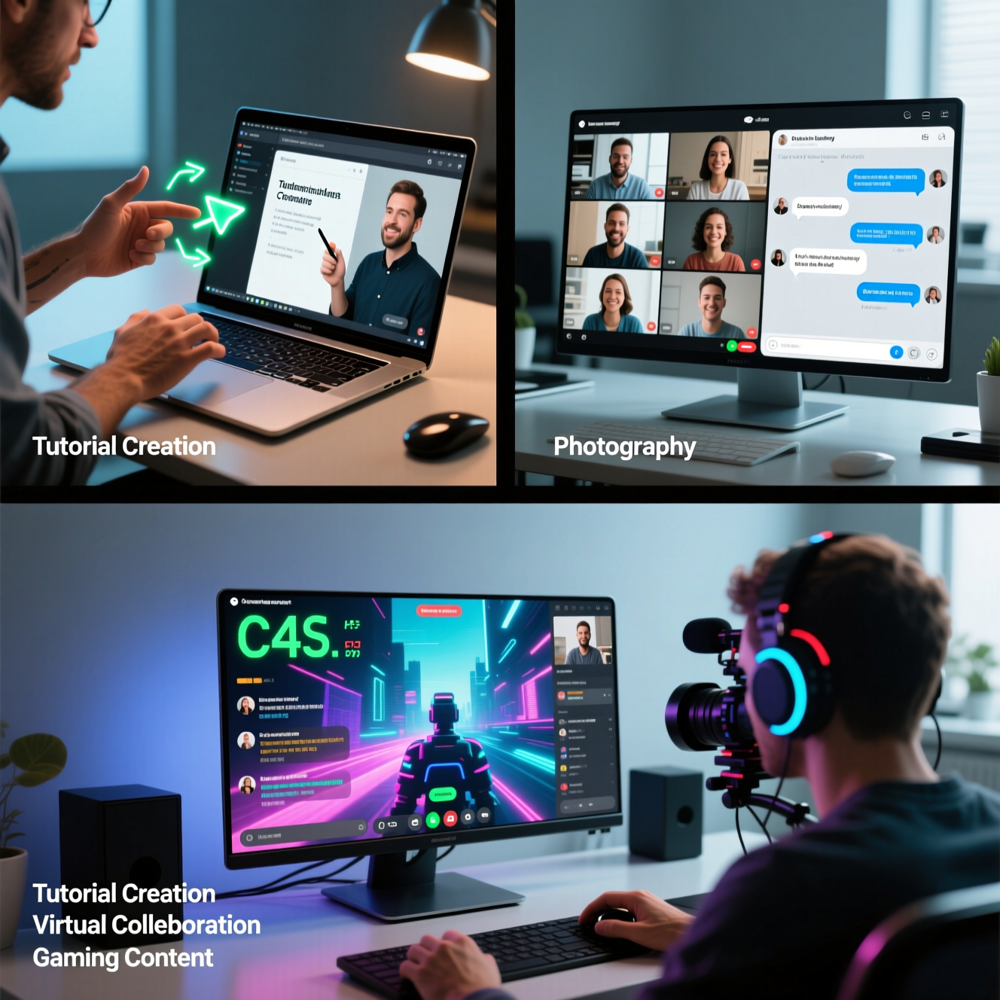
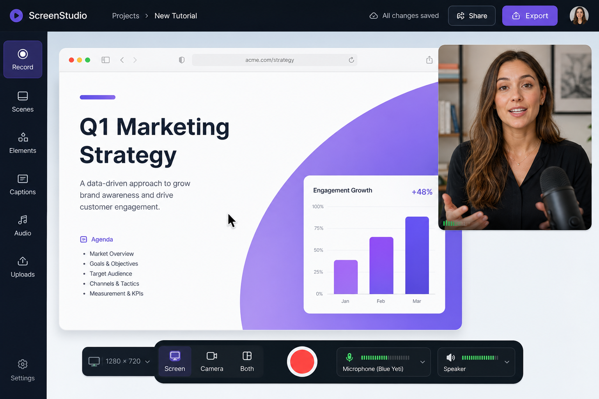
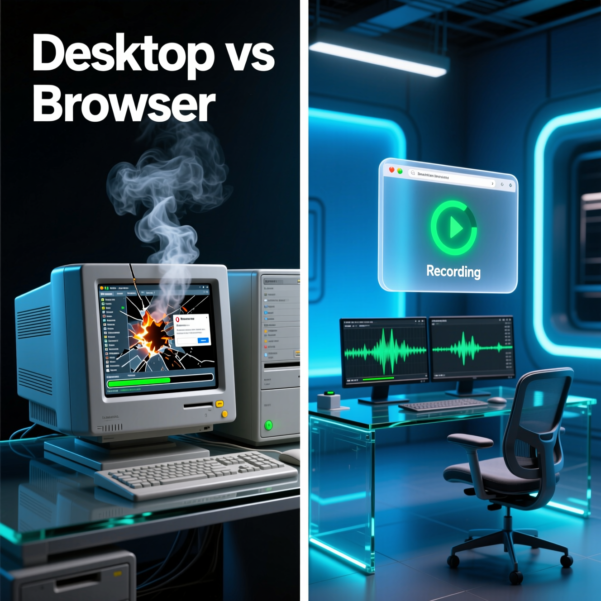
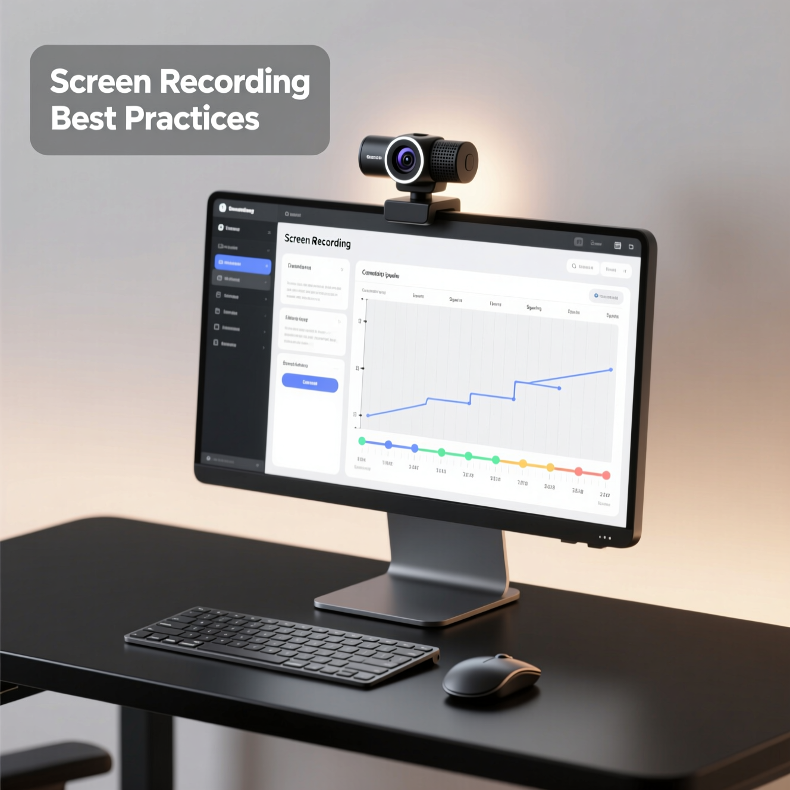

Screen Recorder — Capture, Share, and Create Professional Recordings With Ease
Record Tutorials, Meetings, Presentations, Gameplay, and Digital Workflows With a Modern Browser-Based Screen Recording Solution.

Introduction
Screen recording technology has become one of the most essential tools in modern digital communication. From educational tutorials and professional presentations to technical support, gameplay recording, remote collaboration, and online learning, screen recording plays a major role in how people create and share information today.
As businesses, educators, creators, freelancers, and remote teams increasingly depend on digital communication, the ability to visually demonstrate workflows and processes has become extremely valuable. Written explanations alone are often insufficient for explaining technical tasks, software usage, onboarding instructions, or troubleshooting procedures. Visual demonstrations improve understanding, reduce confusion, and accelerate learning.
A screen recorder allows users to capture everything happening on their device screen, including browser activity, desktop workflows, presentations, applications, tutorials, online meetings, and educational sessions. Many modern recording tools also support microphone audio, webcam overlays, system sound, annotations, and flexible recording options.
However, traditional screen recording software often creates unnecessary complexity through:
- Heavy installations
- High CPU usage
- Complicated interfaces
- Excessive advertisements
- Resource-intensive performance
- Confusing configuration settings
- Compatibility issues
JKM Edit Screen Recorder is designed to simplify the recording experience while maintaining professional usability and performance. The platform focuses on accessibility, lightweight workflows, clean design, and practical functionality for modern users.
Whether users are creating educational lessons, software tutorials, product demonstrations, training sessions, remote collaboration content, or creative media projects, JKM Edit Screen Recorder provides a streamlined recording environment optimized for modern digital workflows.
What Is a Screen Recorder?
A screen recorder is a digital tool that captures visual activity occurring on a device screen. Depending on the software capabilities, users may also record:
- System audio
- Microphone narration
- Webcam overlays
- Cursor movement
- Real-time annotations
- Application windows
- Browser tabs
- Full desktop environments
Screen recording is widely used across multiple industries and professional environments. Common applications include online education, technical support, corporate training, gaming content, product demonstrations, digital marketing, remote collaboration, software tutorials, presentation recording, and workflow documentation.
Modern screen recording tools help users communicate more effectively by visually demonstrating information rather than relying entirely on text.

Why Screen Recording Is Important Today
Digital communication has evolved rapidly in recent years. Remote work, online learning, cloud collaboration, and digital content creation have significantly increased demand for visual communication tools.
Screen recording improves communication by:
- Demonstrating complex workflows visually
- Reducing misunderstanding
- Simplifying technical explanations
- Improving training quality
- Supporting asynchronous communication
- Enhancing educational effectiveness
- Increasing productivity
- Creating reusable learning material
Instead of explaining tasks through long written instructions, users can simply record the process and share visual demonstrations. This approach improves efficiency across professional and educational environments.
Ready to Start Recording?
Capture your screen instantly without downloading heavy software.
Launch Free Screen Recorder
Key Features of JKM Edit Screen Recorder
1. High-Quality Recording
Users can capture smooth and clear recordings suitable for professional tutorials, presentations, and educational content.
2. Browser-Based Accessibility
The platform is designed for modern browser usage, reducing dependency on large software installations.
3. Professional User Interface
A clean interface improves workflow efficiency and usability.
4. Audio Recording Support
Users can capture microphone narration and system sound.
5. Lightweight Performance
Optimized workflows help reduce unnecessary resource consumption.
6. Educational Content Creation
Teachers and trainers can create digital learning material efficiently.
7. Business Presentation Support
Companies can record onboarding sessions, product demonstrations, and training content.
8. Flexible Recording Options
Users can record browser tabs, windows, presentations, or full desktop workflows.
9. Simplified Workflow
The platform minimizes technical complexity to improve accessibility.
10. Modern Multimedia Experience
The design focuses on productivity and professional usability.

Professional Use Cases for Screen Recording
Educational Tutorials
Teachers and educators use screen recording to create online lessons, course modules, assignment explanations, demonstration videos, and revision sessions. Visual teaching significantly improves concept understanding.
Business and Corporate Training
Companies use screen recording for employee onboarding, workflow demonstrations, internal training, product walkthroughs, and knowledge sharing. This improves operational consistency and training efficiency.
Technical Support and Troubleshooting
Support teams can demonstrate solutions visually, document software issues, explain troubleshooting steps, and create reusable support guides. Visual support often resolves problems faster than text-based communication.
Content Creation
Creators use screen recording for tutorials, software reviews, gameplay videos, reaction content, product demonstrations, and educational content. Digital creators rely heavily on efficient recording tools.
Remote Team Collaboration
Teams increasingly use screen recording for asynchronous communication. Instead of scheduling meetings repeatedly, users can record workflow explanations, updates, reviews, demonstrations, and instructions. This improves flexibility and productivity.
Benefits of Browser-Based Screen Recording
Traditional desktop software may require large installations, frequent updates, system permissions, high storage space, compatibility management, and advanced configuration. Browser-based screen recording simplifies accessibility.
Advantages include:
- Faster setup
- Lightweight workflows
- Cross-device support
- Easier onboarding
- Reduced technical barriers
- Improved accessibility
- Flexible usage
JKM Edit focuses on accessibility and simplified workflow management.
Why Choose JKM Edit Screen Recorder?
- Clean Professional Interface: The platform prioritizes usability instead of overwhelming users with complicated layouts.
- Faster Accessibility: Users can begin recording quickly through modern browsers.
- Simplified User Experience: The workflow is designed for both beginners and professionals.
- Optimized Performance: The system focuses on smoother recording experiences.
- Flexible Workflow Support: The platform supports educational, professional, technical, and creative recording needs.
- Reduced Complexity: Users can focus on productivity rather than technical configuration.
JKM Edit vs Other Screen Recording Platforms
| Feature | JKM Edit | Traditional Desktop Recorders | Generic Online Recorders |
|---|---|---|---|
| Browser Accessibility | Yes | No | Yes |
| Lightweight Workflow | Yes | Often resource-heavy | Medium |
| Easy Setup | Yes | Sometimes complex | Medium |
| Modern Interface | Yes | Medium | Low |
| Professional Usability | High | Medium | Medium |
| Quick Accessibility | Yes | Medium | Medium |
| User-Friendly Design | High | Medium | Low |
| Simplified Workflow | Yes | Medium | Medium |
| Accessibility Focus | High | Medium | Medium |

Common Problems With Traditional Recording Software
Many users encounter frustrating issues while using outdated recording tools. Common problems include high CPU consumption, large installation sizes, complex configuration settings, frequent software updates, poor user interface design, compatibility limitations, export delays, excessive advertisements, and performance instability.
These issues negatively affect productivity and user experience. JKM Edit focuses on reducing unnecessary friction while improving accessibility.
Importance of User Experience in Recording Tools
Modern users expect fast accessibility, simple interfaces, reliable workflows, smooth performance, minimal distractions, cross-device compatibility, and professional design. A recording tool should help users focus on content creation rather than technical troubleshooting. JKM Edit prioritizes workflow simplicity and usability optimization.
Educational Advantages of Screen Recording
Screen recording has transformed modern education. Benefits include:
- Better Visual Learning: Students understand visual demonstrations more effectively.
- Rewatchable Lessons: Recorded sessions can be reviewed multiple times.
- Flexible Learning Environments: Students can learn at their own pace.
- Remote Education Support: Screen recording enables scalable online learning.
- Improved Knowledge Retention: Visual learning often improves memory retention.
- Practical Demonstration Capability: Teachers can demonstrate software and workflows directly.
Content Creation and Digital Marketing Applications
Screen recording supports modern content marketing and digital media production. Common uses include software tutorials, product demonstrations, website walkthroughs, educational videos, social media content, customer onboarding, marketing campaigns, and training modules. Businesses increasingly use video-based communication to improve engagement and understanding.

Best Practices for Professional Screen Recording
To create higher-quality recordings, follow these essential guidelines:
- Plan Your Content: Outline your steps or script before hitting record to ensure a smooth, logical flow.
- Clean Your Workspace: Hide messy desktop icons, close irrelevant browser tabs, and mute personal notifications to maintain a professional look.
- Check Your Audio: Test your microphone setup beforehand to capture clear voice audio without distracting background noise.
- Use Smooth Movements: Avoid erratic or rapid cursor movements so your viewers can easily follow your actions on screen.
- Keep It Concise: Focus directly on the main topic. Keep recordings short and to the point, or edit out mistakes later to respect your viewer's time.
Frequently Asked Questions (FAQ)
A digital tool that captures visual activity on your screen, including browser tabs, desktop workflows, and application windows, often alongside audio.
Yes, modern screen recorders support capturing both system audio and microphone narration simultaneously for comprehensive tutorials or presentations.
No. JKM Edit offers a browser-based solution, allowing you to record directly from your web browser without large downloads or complex installations.
They are ideal for creating educational tutorials, business presentations, software demonstrations, technical support guides, and remote team collaborations.
Yes, reputable browser-based recorders process the recording locally within your browser environment, ensuring your data and captured screen content remain private.
Ready to Share Your Screen?
Start recording tutorials, presentations, and workflows instantly directly from your browser.
Start Recording Now